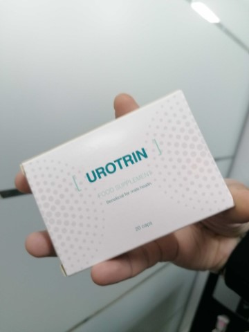
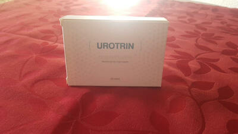

În Israel, bărbații scapă de prostatită timp de 3-4 săptămâni o dată și pentru totdeauna
(metoda este descrisă mai jos)
În același timp, în România, medicii lacomi în coluziune cu farmaciile ascund medicamente eficiente și mulg anual bani de la bărbați, prescriind medicamente și proceduri scumpe! (pentru a afla cum și unde să găsiți un remediu israelian, citiți cu atenție articolul de mai jos)
Prostatita este una dintre cele mai răspândite boli printre bărbații cu vârsta peste 50 de ani și, în același timp, medicii observă o tendință neplăcută de "întinerire" a bolii. Din ce în ce mai des, bărbații se adresează cu aceste probleme la medici la vârsta de 60, 70, 80 de ani.
Boala provoacă următoarele obiceiuri și comportamente
- - stil de viață sedentar,
- - viața sexuală neregulată,
- - boli infecțioase,
- - predispoziție ereditară,
- - stresul și bolile sistemului genito-urinar.
În lumea modernă, este foarte ușor să obțineți probleme cu prostata. Cineva se îmbolnăvește la 55 de ani, cineva la 75 de ani, e doar o chestiune de timp.
Verificați dacă aveți simptome de prostatită:
În 2020, Centrul pentru studiul bolilor urologice a publicat statistici înfricoșătoare: mai mult de 65% dintre bărbați cu vârsta peste 50 de ani suferă de probleme cu prostata. Pentru a determina prezența prostatitei este simplu chiar și fără educație medicală, majoritatea simptomelor sale sunt specifice:
-
Dureri de tăiere, ascuţite:
- - în abdomenul inferior și scrot;
- - în perineu sau penis;
-
Tulburări urinare:
- - urinare frecventă, arsură în uretra;
- - senzație de "vezică urinară nu complet golită";
- - dificultăți la urinare (jet slab);
-
Tulburarea funcției sexuale:
- - reducerea dorinței sexuale;
- - deteriorarea duratei și calității erecției;
-
Tulburare de ejaculare:
- - ejaculare prematură sau probleme cu realizarea ei;
- - ejaculare slabă.
Și, de asemenea, oboseală crescută și iritabilitate.
În ciuda scăderii evidente a calității vieții, mulți bărbați trăiesc cu prostatită de ani buni, fără să știe consecințele ireversibile la care acestea pot fi mai mult sau mai puțin compatibile cu senzațiile neplăcute de viață.
Prostatita netratată duce întotdeauna la adenomul prostatic ("moartea
masculină")
O parte din acești bărbați pot fi înțeleși, diagnosticul de „prostatită” la fiecare bărbat care înțelege acest proces provoacă depresie severă și jenă. În plus, în marea majoritate a cazurilor, după diagnosticarea "prostatitei", o excursie la urolog devine o datorie agonizantă anuală. Medicii atenuează cele mai acute simptome cu ajutorul medicamentelor "recomandate de farmaciști", cu toate acestea, odată ce ați încălcat cea mai mică prescripție, prostatita se va întoarce.
Cum se tratează prostatita la noi (și cum NU trebuie tratată)
Cel mai trist lucru este că este imposibil să scapi de prostatită, chiar dacă vrei cu adevărat.
Tratamentul standard al prostatitei:
- Vă duceţi la spital sau la medic: nu contează, pentru că în cele din urmă va trebui să plătiți.
- Medicul efectuează o examinare, prescrie multe teste. Unele nu sunt necesare, ci sunt efectuate doar pentru a găsi altceva care poate fi tratat. În plus, analizele în sine, de asemenea, costă bani.
- După examinare, medicul diagnostichează "prostatita" și prescrie "medicamente recomandate". Medicamentele sunt prescrise de cei care sunt concepuți pentru ameliorarea simptomelor acute și nu pentru tratamentul prostatitei cronice. Și, desigur, urologul recomandă preparatele companiilor ale căror reprezentanți medicali i-au adus cei mai mulți bani. Aceste medicamente sunt pe buzele tuturor.
-
În plus față de medicamentele "recomandate" pentru ameliorarea simptomelor, medicii prescriu
întotdeauna un masaj rectal al prostatei sau un tratament similar. Aceasta este o procedură
umilitoare și foarte neplăcută - masajul se face cu degetul prin deschiderea anală a bărbaţilor. În
medie, aveți nevoie de 10-14 sesiuni de masaj. Pentru fiecare sesiune, desigur, va trebui să
plătească.
- Pe lângă tratamentul principal, medicii prescriu adesea medicamente pentru îmbunătățirea funcției sexuale, îmbunătățirea calității spermei, „restabilirea organismului” după antibiotice etc.
Ca urmare, tratamentul unic al prostatitei în România costă 5000-10000 lei, urologii formează de fapt un curs de tratament în funcție de capacitățile financiare ale pacientului. În acest caz, vor fi eliminate doar principalele simptome acute ale bolii. Prostatita cronică va rămâne și se va manifesta din nou odată ce încetați să urmați dieta prescrisă de medicul dumneavoastră. Ca urmare, aceste sume va trebui să plătiți anual; aceasta se bazează pe activitatea companiilor farmaceutice.
Cum este tratată prostatita în Israel
În Israel, pentru tratamentul prostatitei, nici măcar nu este necesar să se consultaţi un medic. Este suficient să mergeți la farmacie la primele simptome și să cumpărați un remediu dovedit de zeci de ani, care nu apare pe piața română doar pentru că ajută la eliminarea completă a prostatitei cronice (o dată și pentru totdeauna)! Desigur, un astfel de remediu nu este benefic pentru mafia farmaceutică din România. La urma urmei, este mult mai profitabil ca oamenii să elimine simptomele dureroase în fiecare an decât să vindece boala cu un produs economic care este disponibil absolut tuturor. Spre deosebire de țara noastră, asigurările private de sănătate sunt foarte dezvoltate în Israel. Companiile de asigurări medicale nu sunt interesate ca pacienții să viziteze medicii de mai mult de 2 ori pe an, la urma urmei, companiile trebuie să plătească pentru toate acestea, iar salariile medicilor sunt destul de mari acolo. Dimpotrivă, ei sunt interesați să ofere un tratament cât mai eficient și mai rapid posibil.
În Israel, interesele companiilor de asigurări au învins mafia companiilor farmaceutice și, din fericire pentru bărbații obișnuiți, există întotdeauna un instrument pentru tratamentul prostatitei...
Situația din România se va schimba în bine?
Din păcate, nu se așteaptă schimbări pozitive în acest domeniu, deoarece afacerile de miliarde de dolari ale companiilor farmaceutice europene nu vor permite acest lucru.
Cu toate acestea, astăzi nu trebuie să cumpărați medicamente în farmacie. Acest lucru se poate face online pe site-uri specializate. Recent, cel mai eficient remediu din Israel a fost recunoscut . Acest produs poate fi, de asemenea, achiziționat în țara noastră. Aproape imediat după apariția sa pe piață a devenit foarte popular.
Haideţi să comparăm, cu ce se diferă de cel mai popular medicament care este vândut în farmacii.

În țara noastră, producătorul a reușit să facă acest produs accesibil tuturor! După discuții lungi "cu oamenii potriviți", am reușit să lansăm un program "Sănătatea bărbaților". Scopul programului: să dăm fiecărui bărbat posibilitatea de a scăpa de prostatită fără a-l duce la stadiul cancerului, indiferent de starea sa financiară. Ca parte a acestui program, veți primi cu o reducere de 50%!
Puteți cumpăra pe site-ul producătorului făcând clic pe butonul corespunzător de mai jos.
Principalele rețele de farmacii din țară au lansat deja o campanie pe scară largă împotriva acestui produs. Este posibil ca foarte curând vânzările lui să fie oprite. Vă recomandăm tuturor bărbaților să cumpere , până cât este posibil. Înainte (inclusiv), produsul va fi vândut la o reducere de 50%!
PUTEȚI OBȚINE LA O REDUCERE DE 50%! LĂSAȚI O CERERE DE PARTICIPARE LA PROGRAM. ULTIMA ZI PENTRU A COMANDA UN PRODUS CU REDUCERE - (INCLUSIV)
Comentarii
Eugen

Complet confirm! este un remediu miraculos. L-am cumpărat în Muntenegru, unde am fost în vacanță vara trecută, am dat aproape 70 de euro. Înainte de aceasta, am suferit de prostatită cronică de 10 ani. Am încercat să o tratez cu medicamente clasice, deși au dat doar un efect temporar. Când am utilizat , simptomele prostatitei au dispărut. Recomand tuturor bărbaților. Va ajuta! 
Ion
Am comandat. Chiar am primit produsul cu o reducere de 50%! Plăcut surprins. Mulțumesc!
Mircea
Am avut, de asemenea, experiență în eliminarea prostatitei cu acest produs. Am cumpărat pe site-ul menționat, dar atunci nu au existat reduceri și a costat aproximativ 3000 lei pentru un ambalaj. Dar merită cu adevărat acești bani, el ma ajutat să scap de prostatită timp de aproximativ 4 săptămâni fără masaj. 
Aurel
Am văzut o emisiune la televizor care a fost povestită despre acest produs, în România nu este vândut în farmacii. A fost un fel de investigație jurnalistică. Vreau să aflu mai multe despre acest instrument.
Teodor
Prostatita cronică o am de la vârsta de 28 de ani. Acum am 41 de ani. În acest timp, m-am luat de două ori de tratament, dar nu am obținut rezultate mari. Ultima dată, doctorii abia m-au salvat. Ei au spus că prostatita se poate transforma în cancer de prostată. Prin urmare, vă sfătuiesc pe toți cei care au prostatită, să scape de ea cât mai curând posibil. Este foarte periculos pentru sănătate.
Doina
O să-i iau soțului obligatoriu. Mulțumesc!
Florin
Am primit o reducere de 50%. Mulțumesc producătorilor!
Radu
este cel mai bun remediu! Sunt de acord cu autorul articolului și cu toți comentatorii care l-au lăudat. L-am folosit trei luni în urmă. De la prostatită nu a mai rămas nici o urmă! Am suferit mulți ani, dar acum mă simt minunat.
Marcel
+500. Remediu excelent!
Constantin
Am găsit mai multe informații pe site-ul oficial . Foarte impresionant! Mi-au promis că în cinci zile va veni la mine prin poștă, foarte convenabil.
Vladlen
Și într-adevăr un instrument bun. La început am fost sceptic. L-am primit în câteva zile. Acum, după o lună de utilizare, nu a mai rămas nici-un simptom al prostatitei. Nici durere, nici arsură, nici probleme cu urinarea. În general, sunt foarte mulțumit. Recomand.
Lucian
Vă mulțumim pentru un articol interesant! În România, totul este corupt la cel mai înalt nivel, este bine să aflați de pe internet despre ce nu ne spun medicii. Am comandat la o reducere. În cele din urmă, cu prostatita voi termina.